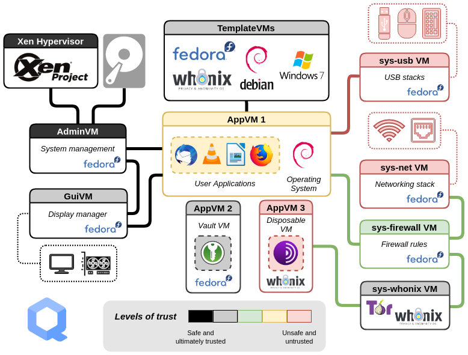
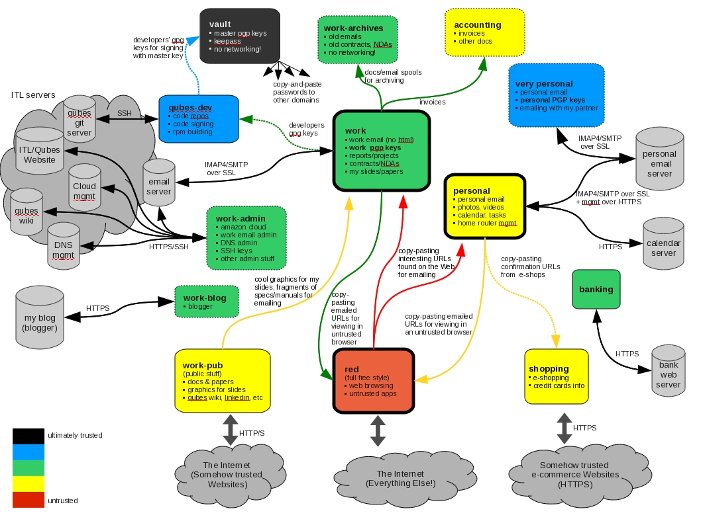
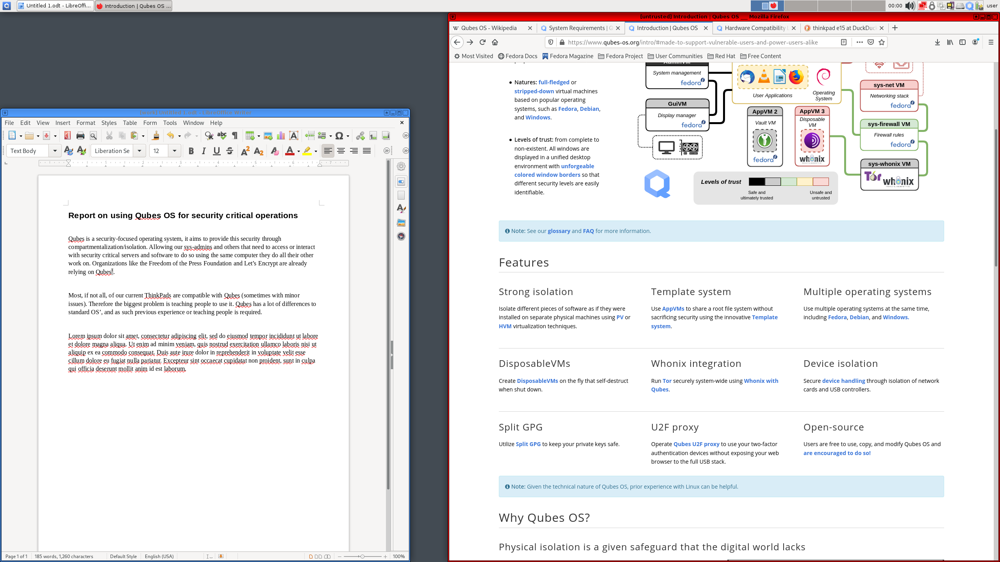

Introduction
What is Qubes OS?
Qubes OS is a free and open-source, security-oriented operating system for single-user desktop computing. Qubes OS leverages Xen-based virtualization to allow for the creation and management of isolated compartments called qubes.
These qubes, which are implemented as virtual machines (VMs), have specific:
Purposes: with a predefined set of one or many isolated applications, for personal or professional projects, to manage the network stack, the firewall, or to fulfill other user-defined purposes.
Natures: full-fledged or stripped-down virtual machines based on popular operating systems, such as Fedora, Debian, and Windows.
Levels of trust: from complete to non-existent. All windows are displayed in a unified desktop environment with unforgeable colored window borders so that different security levels are easily identifiable.

备注
See our Glossary and Frequently asked questions (FAQ) for more information.
Features
- Strong isolation
Isolate different pieces of software as if they were installed on separate physical machines using advanced virtualization techniques.
- Template system
Use app qubes to share a root file system without sacrificing security using the innovative Template system.
- Multiple operating systems
Use multiple operating systems at the same time, including Fedora, Debian, and Windows
- Disposables
Create disposables on the fly that self-destruct when shut down.
- Whonix integration
Run Tor securely system-wide using Whonix with Qubes.
- Device isolation
Secure device handling through isolation of network cards and USB controllers.
- Split GPG
Utilize Split GPG to keep your private keys safe.
- CTAP proxy
Operate Qubes CTAP proxy to use your two-factor authentication devices without exposing your web browser to the full USB stack.
- Open-source
Users are free to use, copy, and modify Qubes OS and are encouraged to do so!
备注
Given the technical nature of Qubes OS, prior experience with Linux can be helpful.
Why Qubes OS?
Physical isolation is a given safeguard that the digital world lacks
Throughout our lives, we engage in various activities, such as going to school, working, voting, taking care of our families, and visiting with friends. These activities are spatially and temporally bound: They happen in isolation from one another, in their own compartments, which often represent an essential safeguard, as in the case of voting.
In our digital lives, the situation is quite different: All of our activities typically happen on a single device. This causes us to worry about whether it's safe to click on a link or install an app, since being hacked imperils our entire digital existence.
Qubes eliminates this concern by allowing us to divide a device into many compartments, much as we divide a physical building into many rooms. Better yet, it allows us to create new compartments whenever we need them, and it gives us sophisticated tools for securely managing our activities and data across these compartments.

Qubes allows you to compartmentalize your digital life
Many of us are initially surprised to learn that our devices do not support the kind of secure compartmentalization that our lives demand, and we're disappointed that software vendors rely on generic defenses that repeatedly succumb to new attacks.
In building Qubes, our working assumption is that all software contains bugs. Not only that, but in their stampeding rush to meet deadlines, the world's stressed-out software developers are pumping out new code at a staggering rate - far faster than the comparatively smaller population of security experts could ever hope to analyze it for vulnerabilities, much less fix everything. Rather than pretend that we can prevent these inevitable vulnerabilities from being exploited, we've designed Qubes under the assumption that they will be exploited. It's only a matter of time until the next zero-day attack.
In light of this sobering reality, Qubes takes an eminently practical approach: confine, control, and contain the damage. It allows you to keep valuable data separate from risky activities, preventing cross-contamination. This means you can do everything on the same physical computer without having to worry about a single successful cyberattack taking down your entire digital life in one fell swoop. In fact, Qubes has distinct advantages over physical air gaps.

Made to support vulnerable users and power users alike
Qubes provides practical, usable security to vulnerable and actively-targeted individuals, such as journalists, activists, whistleblowers, and researchers. Qubes is designed with the understanding that people make mistakes, and it allows you to protect yourself from your own mistakes. It's a place where you can click on links, open attachments, plug in devices, and install software free from worry. It's a place where you have control over your software, not the other way around. (See some examples of how different types of users organize their qubes.)
Qubes is also powerful. Organizations like the Freedom of the Press Foundation, Mullvad, and Let's Encrypt rely on Qubes as they build and maintain critical privacy and security internet technologies that are in turn relied upon by countless users around the world every day. Renowned security experts like Edward Snowden, Daniel J. Bernstein, Micah Lee, Christopher Soghoian, Isis Agora Lovecruft, Peter Todd, Bill Budington, and Kenn White use and recommend Qubes.
Qubes is one of the few operating systems that places the security of its users above all else. It is, and always will be, free and open-source software, because the fundamental operating system that constitutes the core infrastructure of our digital lives must be free and open-source in order to be trustworthy.

Qubes OS at a glance
- Video tours
Want to see Qubes OS in action? Sit back and watch one of the guided Video tours!
- Screenshots
See what using Qubes actually looks like with various applications running in Qubes.
- Getting started
Ready to get started with Qubes? Find all you need to know after installing.
More information
This page is just a brief introduction to what Qubes is all about, and many technical details have been omitted here for the sake of presentation.
If you’re a current or potential Qubes user, you may want to check out the documentation and the user FAQ.
If you’re a developer, there’s dedicated Developer Documentation and a developer FAQ just for you.
Ready to give Qubes a try? Head on over to the downloads page, and read the Installation guide.
Need help, or just want to join the conversation? Learn more about help, support, the mailing lists, and the forum.